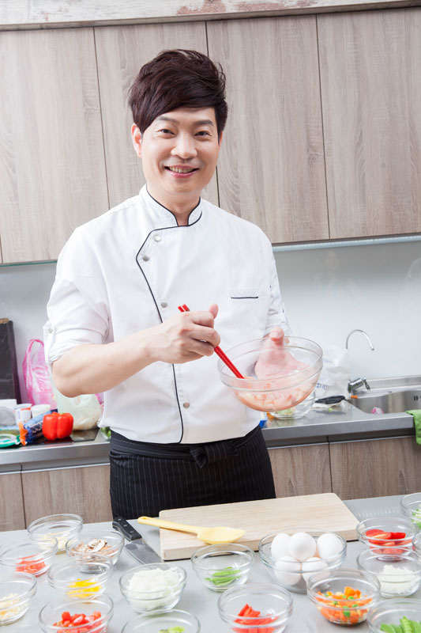
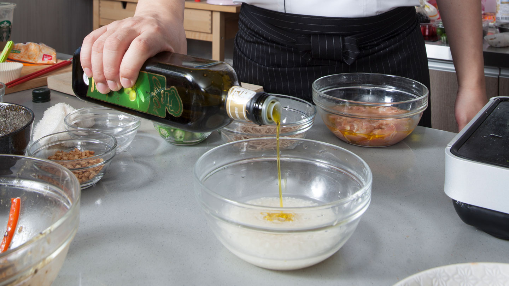
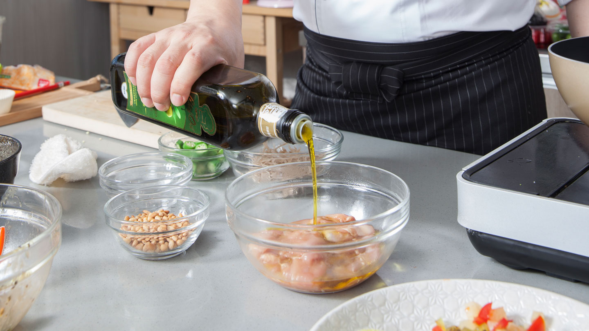
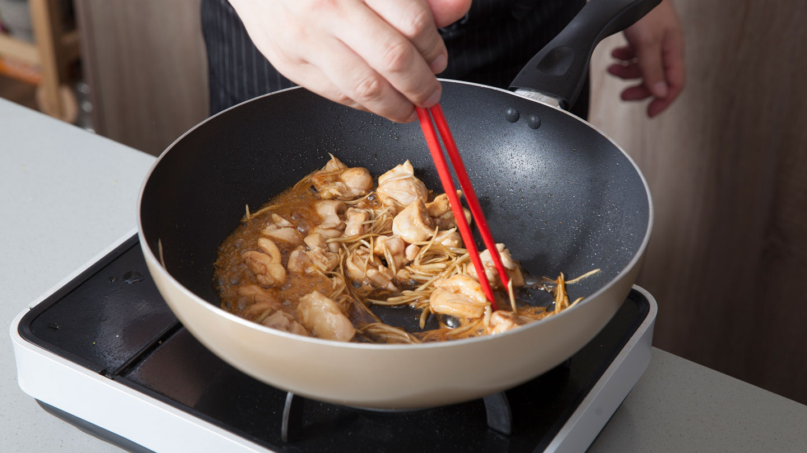
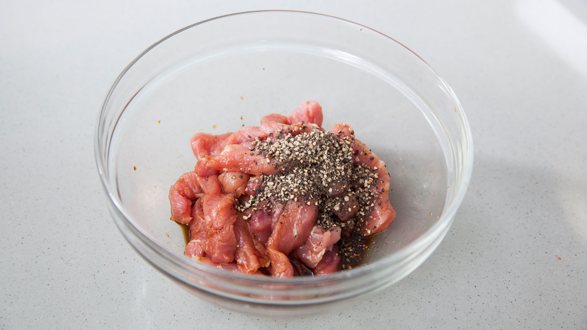
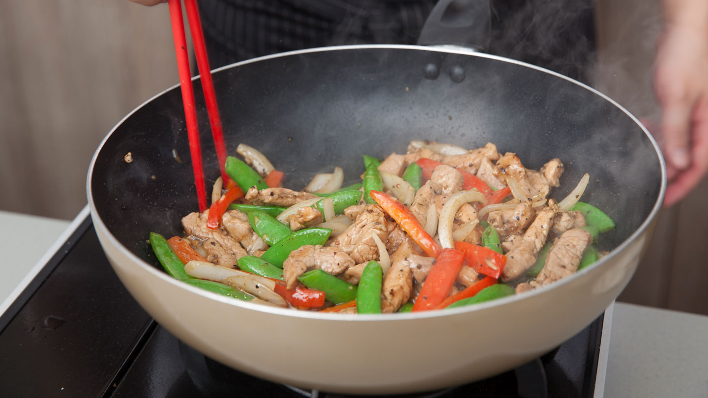
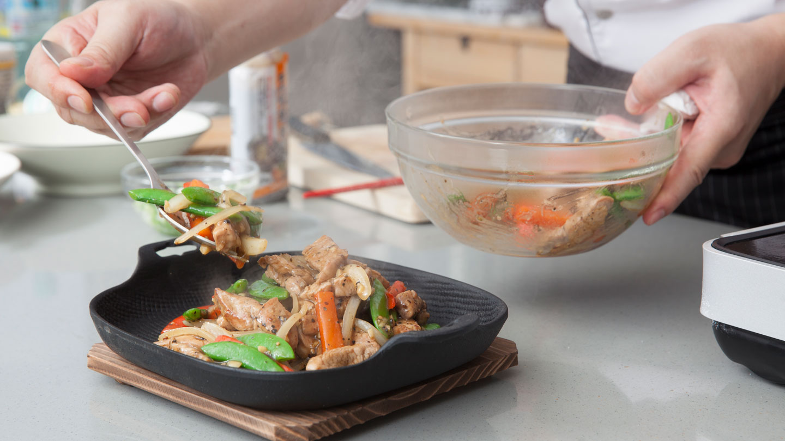
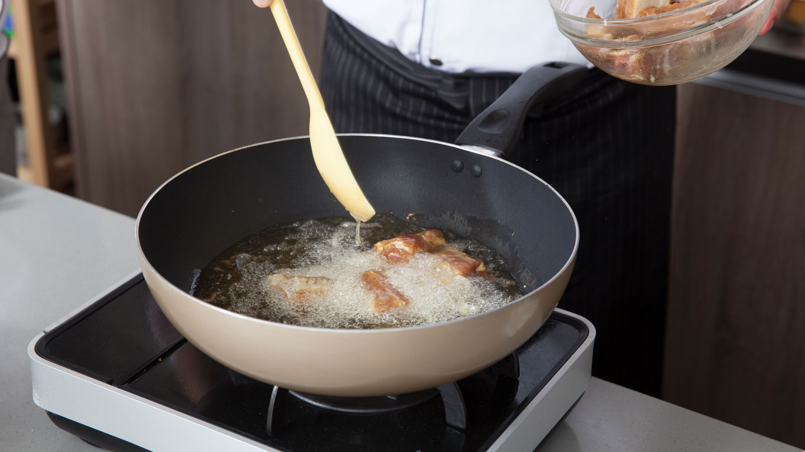
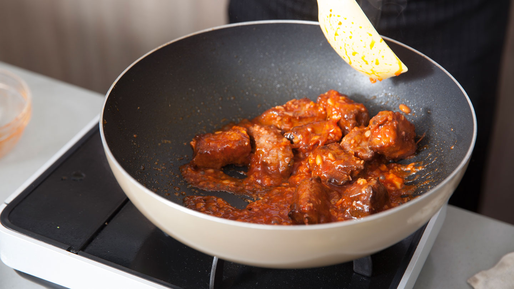
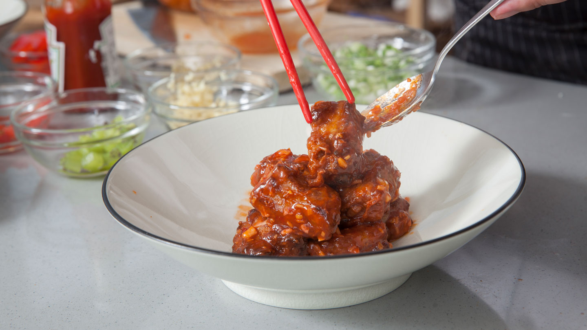

Chef Oil 主廚精選
秋季另類進補
秋季進補 顛覆傳統作法
聽到「進補」兩個字，許多人的直覺就是想到又苦、又澀的藥材味！補，其實不是只有一種方式，龍師傅說：「所謂秋季進補，適合以溫和養身方式為主，只要在烹調時，選擇當季食材或是具有進補功效材料，如：黑胡椒(溫中散寒)、辣味食物(身體產生熱能、通氣血)、牛蒡(代謝、調整消化)、秋葵(補氣、助消化)等再透過油溫佐以適當油品，進而達到進補效果。」

RECIPES
1
牛蒡秋葵松子雞肉炊飯
油品
Chef Oil第一道冷壓橄欖油 (Extra Virgin Olive Oil)
食材
-
牛蒡1支
-
秋葵100克
-
去骨雞腿2支
-
松子40克
-
米100克
調味品
醬油、味醂
作法
Step 1
將米洗淨後加入水和冷壓橄欖油，放入電鍋中炊煮。

Step 2
雞肉去皮切丁，倒入橄欖油醃抓一下增加口感。

Step 3
將雞腿丁、牛蒡絲放入鍋中加入調味料拌炒。炊飯完成後取出，加上炒好的雞肉與燙好的秋葵及松子即完成。

RECIPES
2
黑椒三色滑豬柳
油品
Chef Oil 葡萄籽油 (Grapeseed Oil)
食材
-
豬小里肌300克
-
洋蔥1/2顆
-
甜豆30克
-
紅甜椒1/2顆
-
蒜末20克
調味品
- 醃料：醬油、現磨新鮮黑胡椒粒10克、米酒
- 黑胡椒醬
作法
Step 1
豬里肌切成條狀、加入調味料醃漬備用。

Step 2
鍋中倒入葡萄籽油，待油熱後放入豬柳拌炒成金黃色。

Step 3
加入黑胡椒醬拌炒均勻，再加入蔬菜拌炒即完成。

RECIPES
3
川味干燒嫩子排
油品
Chef Oil玄米油 (Rice Bran Oil)
食材
-
豬小排300克
-
薑末30克
-
蒜末30克
-
蔥40克
調味品
- 醃料：醬油、蛋汁、米酒、太白粉
- 辣椒醬、糖、番茄醬、酒釀、太白粉水
作法
Step 1
鍋中倒入玄米油加熱，放入醃好的豬小排，炸至金黃色後取出備用。

Step 2
倒入玄米油至鍋中，炒香薑末、蒜末後放入調味料與排骨，開小火燒至軟
嫩入味。

Step 3
豬小排盛出裝盤，灑上蔥花即完成。
